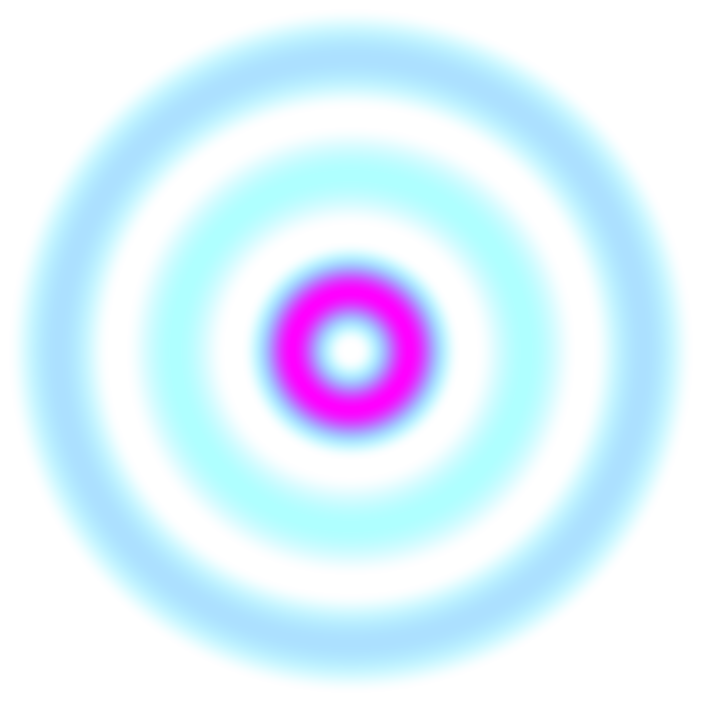
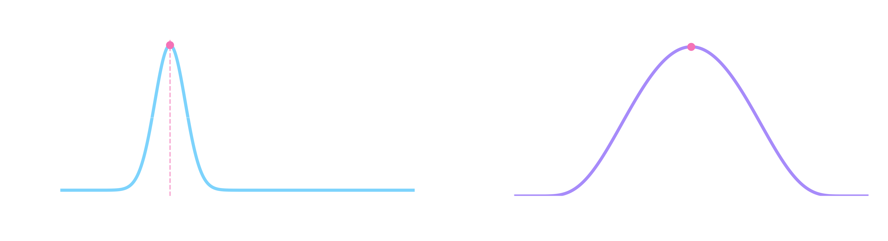

Lenia
From Conway to artifical life
Lenia is a cellular automaton introduced by Bert Chan in the paper Lenia - Biology of Artificial Life. It is meant as a generalization of Conway's Game of Life (GoL) where each cell can take continuous values instead of boolean ones. Conway's GoL is as well-known example of emergence, where complex behaviors arises from very simple rules.
Classical Lenia
In the case of Lenia, while time is still discrete, the space in now considered to be continuous. For simplicity, we consider that the space is the $d$-dimensional flat torus $\mathbb{T}^d$. For a time step $\delta t$, the update at time $t$ is given by
$$
u^{t+\delta t} = \left[ u^t + \delta t G(K*u^t) \right]_0^1,
$$
where $G: \mathbb R \mapsto \mathbb R$ is the growth function, $K: \mathbb T^d \to \mathbb R$ is the kernel and
$$
[x]_0^1 = \max(\min(x, 1), 0)
$$ is the clipping operation.

Implementing Lenia
In order to simulate this equation, we first need to discretize it in space. To this purpose, we discretize $\mathbb T^d$ into a regular grid of $N^d$ points with spacing $h=1/N$. We identify a function $u:\mathbb T^d\to\mathbb R$ with the array $$ u=(u_{\mathbf i})_{\mathbf i\in\{0,\ldots,N-1\}^d}, \qquad u_{\mathbf i}\approx u(h\mathbf i). $$ Since the domain is a torus, all indices are understood modulo $N$.
The convolution can then be approximated by the periodic discrete convolution $$ (K*u)(h\mathbf i)\approx h^d\sum_{\mathbf j\in\{0,\ldots,N-1\}^d}K\bigl(h(\mathbf i-\mathbf j)\bigr)u_{\mathbf j}. $$ A direct evaluation of this sum at every grid point would require $O(N^{2d})$ operations, which quickly becomes prohibitively expensive. But since we are on the torus, the convolution can be computed efficiently using the discrete Fourier transform (DFT).
Let $\mathcal F$ and $\mathcal F^{-1}$ denote the $d$-dimensional discrete Fourier transform and its inverse. With a consistent normalization convention, the convolution theorem gives $$ K*u = \mathcal F^{-1}\left(\mathcal F(K) \mathcal F(u)\right). $$ Consequently, one time step of the discretized Lenia dynamics can be implemented as $$ u^{t+\delta t} = \left[u^t+\delta t G\left(\mathcal F^{-1}\left( \widehat K\,\widehat u^t\right)\right)\right]_0^1, $$ where $$ \widehat K=\mathcal F(K), \qquad \widehat u^t=\mathcal F(u^t). $$ Note that the kernel transform $\widehat K$ can be computed once before starting the simulation. This leads to a computational complexity of approximately $O(N^d\log N)$. We know have all the ingredients to implement Lenia! I took the decision to implement it in PyTorch, in case GPU computation would be necessary for large kernels. You can download the script
In the following videos, you can see the vast variety of Lenia's behaviors, depending on the coice of parameters.
We see that despite the simplicity of this update, the resulting dynamics can exhibit extremely different and complex structures, from blob-like growing patterns to stable "gliders" or periodic patterns.
Asymptotic Lenia
As we have seen, Lenia can produce aesthetically pleasing pictures with very simple rules. However, the Lenia update in itself isn't completely satisfactory from a mathematical point of view. Indeed, is we dropped the clipping procedure, one would end up with the update $$ u^{t+\delta t} = u^t + \delta t G(K*u^t), $$ which you might have recognized as the foward Euler discrtization of the following integro-differential equation: $$ \partial_t u = G(K*u), $$ where $u:[0,T] \times \mathbb T^d \to \mathbb R$ is now a space-time valued function. However, nothing prevents this equation to blow-up, and we would like to modify t so that $u$ stays between $0$ and $1$ over time. That is what some authors did in the paper Introducing asymptotics to the state-updating rule in Lenia, by simply replacing the previous equation by $$ \partial_t u = T(K*u) - u, $$ where $T:[0,1] \to [0,1]$ (usually, we take $T = \frac{G+1}{2}$ with the previously defined $G$). Now, starting from an initial condition $0 \leq u_0 \leq 1$, we know that for every $t$ and every $x$, $0 \leq u(t,x) \leq 1$. Indeed, if $u=0$ then $$ \partial_t u = T(K*u) \geq 0 $$ hence the mass at $x$ can not decrease further; the same argument holds for $u=1$.
Another nice proprety of Asymptotic Lenia is that as soon as $T$ is Lipschitz, there exists a global solution $u$ thanks to he Picard-Lindelof theorem. This as been pointed out in the paper Existence of Life in Lenia, where the authors also show existence for the "clipped" asymptotic version of Lenia.
Lenia vs. Asymptotic Lenia: what differences?
It is not clear what properties of Lenia should be inherited by Asymptotic Lenia. However, one of the property that is not conserved is the possibility of Lenia organisms to "die", i.e. to get to $u=0$ in finite time starting from $u_0 \neq 0$. This is not possible in Asymptotic Lenia, due to the uniqueness in the Picard-Lindelof theorem.
Anyway, here are some results:
The behavior is, in the eyeball metric, similar to the one of Lenia. You can download and play with the script
Automatic patterns discovery
As you may have noticed, certain localized shapes tend to keep their shape and just travel through the domain without changin their shape. This is what is called a glider. So far, we discovered gliders by serendipity. But would it be possible to make the discovery of such gliders automatic? By placing ourselves in the context of Asymptotic Lenia, this is actually fairly easy and has been considered in the paper The Glider Equation for Asymptotic Lenia.
Let us discuss how this works: let $v \in \mathbb R^d$ be some vector. We say that $u$ glides at velocity $v$ if for all $t>0, x \in \mathbb T^d$, we have $$ u(t, x) = u(0, x-vt)=u_0(x -vt) $$ i.e. the field $u$ is just a translation of the initial condition $u_0$. For such function to be a solution of the Asymptotic Lenia equation $\partial_t u = T(K*u) - u$, $u_0$ must verify $$ u_0 - v \cdot \nabla u_0 - T(K * u_0) = 0. $$ Indeed, by the chain rule, $$ \partial_t u(t,x) = \partial_t \left[u_0(x-vt)\right] = -v \cdot \nabla u_0(x-vt). $$ which when plugged into the original equation leads to the result.
The results will come soon, as I'm still struggling with the code.
Lecture notes:
Companion books/notes:
-
Numerical Analysis and Optimization
,
G. ALLAIRE. -
Real and Complex Analysis,
W. RUDIN. -
An Overview Of Artificial Neural Networks for Mathematicians,
L. FERREIRA GUILHOTO.